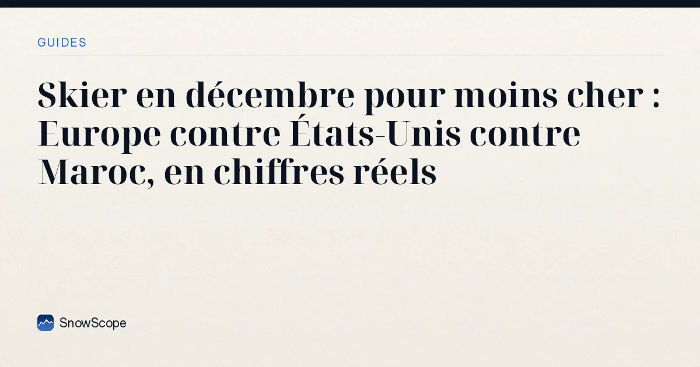

Skier en décembre pour moins cher : Europe contre États-Unis contre Maroc, en chiffres réels
Où une journée de ski en décembre coûte-t-elle le moins pour la neige obtenue ? Nous avons mis côte à côte les mêmes chiffres de neige, tirés de notre historique de 46 hivers, et les prix de forfait que nous avons pu vérifier sur les pages officielles, pour l'Ouest américain, les Alpes et le Haut Atlas marocain. La réponse courte : le billet le moins cher est au Colorado, la neige la plus sûre est en altitude dans les Alpes et dans le Nord-Ouest américain, et le Maroc est un pari en décembre.
Consultez les prévisions neige en temps réel pour World sur l'application SnowScopeHauteurs de neige, alertes poudreuse et carte 3D, gratuitement.
L'Ouest américain : semaines pas chères, bonnes chances au nord
Ski Cooper, au Colorado, est la journée la moins chère que nous ayons vérifiée : 49 $ en semaine (99 $ le week-end et les jours fériés), avec 26 in (66 cm) à mi-pente un 15 décembre typique et 70 % des hivers au-dessus de 20 in (50 cm). Wolf Creek coûte 96 $ les jours normaux pour 34 in (87 cm) et 72 %.
Pour la certitude, le Nord-Ouest et les Tetons sont en tête. Mt. Baker avait 46 in (116 cm) à mi-pente un 15 décembre typique et 93 % des hivers au-dessus de 20 in, à 98,80 $ hors pointe. Grand Targhee avait 46 in (118 cm) et 100 % des hivers, de 125 $ à 180 $ selon la date.

Les Alpes : des stations hautes, des prix de début de saison
Dans les Alpes, la neige se trouve en altitude. À Val Thorens, la mi-pente (2 498 m) avait 89 cm un 15 décembre typique, avec 50 cm ou plus dans 80 % des hivers, et le sommet 159 cm. Le forfait journée adulte des 3 Vallées est à 75,70 € en basse saison du 5 au 18 décembre 2026 et à 84,20 € à partir du 19 décembre.
Les Grands Montets, à Chamonix, avaient 65 cm à mi-pente (2 001 m) un 15 décembre typique et 63 % des hivers au-dessus de 50 cm, mais 157 cm au sommet. Le forfait Mont-Blanc Unlimited coûte de 75 € à 104 € entre le 28 novembre et le 18 décembre, selon la date. St. Anton, à titre de comparaison neige seulement, avait 56 cm à mi-pente et 61 %.
Maroc : le voyage le moins cher, la neige la plus mince
Oukaïmeden, dans le Haut Atlas au sud de Marrakech, est l'idée évidente de voyage bon marché pour les skieurs européens et marocains. Mais sur notre historique, décembre y est précoce : la mi-pente (2 929 m) avait 16 cm un 15 décembre typique, et seulement 11 % des hivers atteignaient 50 cm. Son domaine skiable s'étend de 2 600 m à 3 200 m avec six remontées (Wikipédia).
Nous n'avons trouvé aucun tarif officiel en ligne pour les remontées le 13 novembre 2026, nous ne citons donc pas de prix : elles se paient sur place. Oukaïmeden est une bonne sortie de ski en décembre si une tempête vient de passer, pas un séjour de ski de décembre à réserver des mois à l'avance.
Et le Canada, pour mémoire
De l'autre côté de la frontière depuis l'Idaho, Whitewater, en Colombie-Britannique, avait 81 cm à mi-pente (1 725 m) un 15 décembre typique, avec 50 cm ou plus dans 89 % des hivers, dans la même catégorie que Mt. Baker. Nous n'avons pas comparé son prix.
Alors, où est-ce le moins cher en décembre ?
Pour le prix le plus bas à la journée : un jour de semaine à Ski Cooper. Pour la meilleure neige par euro ou par dollar en début de mois : un jour de semaine hors pointe à Mt. Baker, ou le forfait basse saison des 3 Vallées avant le 19 décembre à Val Thorens, où la neige est haute et fiable. Pour un voyage pas cher avec une petite chance de skier : Oukaïmeden, réservé au dernier moment après une chute de neige.
Conseils aux skieurs
- Comparez d'abord la neige, puis le billet : une journée pas chère sur une neige mince n'est pas si bon marché.
- Dans les Alpes, skiez avant le 19 décembre pour le prix de basse saison ; aux États-Unis, skiez du lundi au jeudi.
- Pour Oukaïmeden, surveillez notre carte de neige et partez dans les jours suivant une tempête.
- Les prix sont dans la monnaie locale telle que vérifiée sur les pages officielles ; nous ne les convertissons pas.
Références et crédits
- Mt. Baker Ski Area, daily lift tickets (official) www.mtbaker.us/tickets-and-passes/daily-lift-tickets/
- Ski Cooper, day pass 2026-27 (official) www.skicooper.com/cooper-day-pass/
- Wolf Creek Ski Area, tickets and passes 2026-2027 (official) wolfcreekski.com/tickets-passes/
- Grand Targhee, winter lift tickets 2026-27 (official) www.grandtarghee.com/tickets-passes/lift-tickets/winter-lift-tickets
- Les 3 Vallées, adult 1-day pass 2026-27 (official) www.les3vallees.com/en/skipass/adult-1-day-solo-pass
- Mont-Blanc Unlimited, ticketing 2026-27 (official) www.montblancnaturalresort.com/en/ticketing/montblanc-unlimited
- Wikipedia, Oukaïmeden (read 13 November 2026) en.wikipedia.org/wiki/Ouka%C3%AFmeden
À propos de ces chiffres
Chiffres de neige : historique SnowScope, 46 hivers passés (1980-81 à 2025-26) aux altitudes indiquées (bas, mi-pente, sommet), une reconstitution de la neige passée pour une zone, corrigée de l'altitude (base ERA5-Land ; Snow_Hydro 1 km pour le Maroc), pas les bulletins de la station. Neige actuelle : la carte SnowScope. Remontées, pistes et altitudes : cartographie OpenSkiMap. Prix : les pages officielles listées ci-dessous, consultées le 13 novembre 2026 ; les prix dynamiques varient avec la date et la demande.
Citer ce bulletin
Pour la recherche, l'enseignement ou la presse : chiffres et graphiques réutilisables librement sous CC BY 4.0 avec cette citation.
SnowScope (2026), Skier en décembre pour moins cher : Europe contre États-Unis contre Maroc, en chiffres réels, https://snowscope.app/blog/fr/2026/11/ski-december-for-less-europe-vs-us-vs-morocco.html, consulté le 2026-11-14
SnowScope (Atlas Labs). (2026, November 14). Skier en décembre pour moins cher : Europe contre États-Unis contre Maroc, en chiffres réels. SnowScope snow reports. https://snowscope.app/blog/fr/2026/11/ski-december-for-less-europe-vs-us-vs-morocco.html
BibTeX
@misc{snowscope2026skidecemberforlesseurope,
author = {{SnowScope (Atlas Labs)}},
title = {Skier en décembre pour moins cher : Europe contre États-Unis contre Maroc, en chiffres réels},
year = {2026},
month = nov,
howpublished = {\url{https://snowscope.app/blog/fr/2026/11/ski-december-for-less-europe-vs-us-vs-morocco.html}},
note = {Published 2026-11-14 13:29 UTC; accessed 2026-11-14}
}· CC BY 4.0 · Méthodes, données et outils →
Suivre World
Gratuit : un message quand la neige arrive, et la météo chaque matin.